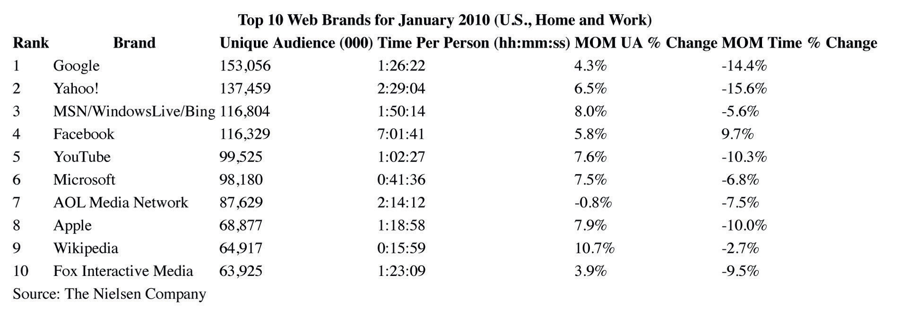

What do your former high school classmates do for a living? What does your favorite celebrity think about the current administration? What do other professionals in your field think about industry trends? Which restaurant do your coworkers frequent? Five years ago, these questions would most likely have been met with blank stares, but thanks to the exponential growth of electronic media—social networking in particular—it is now possible to keep track of past and present contacts via the Internet, sometimes in exhaustive detail. As social media use continues to grow in popularity, marketers, advertisers, and businesses are looking for ways to use the new technology to increase revenue and improve customer service. Meanwhile, social networking sites are expanding into commerce, connecting businesses and consumers via third-party sites so that people can bring a network of friends to partner websites. Facebook ConnectTechnology that enables users of social networking site Facebook to connect their account with any partner website using an authentication method., for example, enables a consumer to visit a partner site such as Forever 21, find a pair of jeans on sale, and broadcast the information to everyone on her Facebook network. If a few Facebook friends do the same thing, the information can create an effective viral marketing campaign for the partner site. A more secure version of the ill-fated Beacon (see Chapter 11 "The Internet and Social Media"), Facebook Connect extends the Facebook platform out of the social network’s walls, creating one giant network on the web.
The current trend toward immediacy (instant Twitter updates, instant Google searches, instant driving directions from Google Maps) is compounded by the development of smartphone applications, which allow users to access or post information wherever they happen to be located. For example, a person shopping for a particular product can instantly compare the price of that product across an entire range of stores using the Android ShopSavvy app, while someone new to an area can immediately locate a gas station, park, or supermarket using iPhone’s AroundMe app. Industry insiders have coined the term nowismThe instant gratification that can be achieved by real-time content on the web. to describe the instant gratification that can be achieved by real-time content on the web. Sparked by social networking sites such as Facebook and Twitter, the real-time trend looks set to continue, with companies from all types of industries jumping on the immediacy bandwagon.
The growth of social media over the past few years has been exponential; according to Nielsen, Twitter alone grew 1,382 percent in February 2009, registering 7,000,000 unique visitors in the United States for the month. By February 2010, Twitter had 75,000,000 registered users and between 10,000,000 and 15,000,000 active tweeters.Sharon Gaudin, “Twitter Users Send 50 Million Tweets a Day,” Computerworld, February 23, 2010, http://www.computerworld.com/s/article/9161118/Twitter_users_send_50_million_tweets_a_day. Meanwhile, Facebook has more than 400 million active users worldwide, according to its website, with each user averaging 130 Facebook friends. In February 2010, Facebook was declared the web’s most popular site, with users spending an average of more than 7 hours a month on the site; more than the amount of time spent on Google, Yahoo!, YouTube, Amazon.com, Wikipedia, and MSN combined.Ben Parr, “Facebook Is the Web’s Ultimate Timesink,” Mashable (blog), February 16, 2010, http://mashable.com/2010/02/16/facebook-nielsen-stats/.
Figure 16.3
The average U.S. user spends more than 7 hours a month on social networking site Facebook.
Initially conceived in 2004 as a website for students to keep in touch over the Internet and get to know each other better, Facebook has since developed into the world’s largest social networking site. In addition to connecting friends and acquaintances and enabling users to share photos, links, and multimedia, the site (along with other social networking sites such as MySpace) has branched out into social gaming, a rapidly growing industry that allows users to download free games through the site and play online with friends and family members. Appealing to a wide demographic—including people who rarely play video games—social games such as FarmVille and Mafia Wars are free to play, but generate revenue for developers by offering additional bonuses or virtual goods for paying players. A recent survey found that most of the revenue generated by the social gaming audience comes from a small percentage of players (around 10 percent) who are willing to actually spend money on social networking games. Out of that 10 percent, just 2 percent of people, described as the “whales” of the social gaming industry, spend more than $25 a month on social games. Inside Network founder Justin Smith, who coauthored the survey, said, “It is clear that people either spend a lot of money or spend nothing.”Dean Takahashi, “Social Game ‘Whales’ are Big Spenders on Facebook, Survey Says” VentureBeat, June 22, 2010, http://venturebeat.com/2010/06/22/social-game-whales-are-big-spenders-on-facebook-survey-says/. The games, which primarily appeal to the female over-40 demographic, are designed so that Facebook users can spend a few minutes playing several times a day. In the United States, 55 percent of social network game players are women, and the average age is 48.Caleb Johnson, “Average Social Networking Gamer in the U.S.? Your Mom,” Switched, February 17, 2010, http://www.switched.com/2010/02/17/average-social-networking-gamer-in-the-u-s-your-mom/.
Other continuing trends in social networking include microblogging on sites such as Twitter, which is rapidly becoming the fastest source of news on the Internet. The site acts as a personal newswire, passing on information about shared world events as they affect people in real time. For example, when an earthquake shook Los Angeles in 2008, people began tweeting personal accounts from their homes 9 minutes before the Associated Press picked up the story. In 2009, citizens of Iran bypassed government censorship by tweeting news of the election results across the world. Organizations such as the Associated Press communicated with Twitter users to receive information about the resulting protests and demonstrations.Rebecca Santana, “Twittering the election crisis in Iran,” USA Today, June 16, 2009, http://www.usatoday.com/tech/world/2009-06-15-iran-twitter_N.htm.
Business owners are also beginning to realize the power of Twitter; online shoe merchant Zappos.com provides more than 500 of its employees with Twitter accounts to humanize the people behind the sales and help them connect with their customers. Feedback from Twitter users provides companies with valuable information about how they can improve their products and services. Celebrities have also attached themselves to Twitter as a means of publicizing forthcoming projects and keeping in touch with fans. Actor Ashton Kutcher is particularly media savvy; beating news outlet CNN to become the first Twitter user with more than 1,000,000 followers in 2009, the star used his popularity to raise awareness for medical charity Malaria No More, donating 10,000 mosquito nets to the organization following his success as Twitter’s first “millionaire.” Kutcher’s social media consultancy, Katalyst Films, maximizes the use of social networking technology by working with entertainment content, advertising, and online conversation in an effort to generate money from the web. “Entertainment, really, is a dying industry,” Kutcher said in a 2009 interview. “We’re a balanced social-media studio, with revenue streams from multiple sources—film, TV, and now digital. For the brand stuff, we’re not replacing ad agencies but working with everyone to provide content and the monetization strategies to succeed on the Web.”Ellen McGirt, “Mr. Social: Ashton Kutcher Plans to be the Next New-Media Mogul,” Fast Company, December 1, 2009, http://www.fastcompany.com/magazine/141/want-a-piece-of-this.html.
In addition to brand marketing and cross-promotions infiltrating social networking sites, digital experts predict social media will become more exclusive, with people filtering out clutter from unwanted sources. David Armano, senior vice president of Edelman Digital, said, “Not everyone can fit on someone’s newly created Twitter list and as networks begin to fill with noise, it’s likely that user behavior such as ‘hiding’ the hyperactive updaters that appear in your Facebook news feed may become more common.”David Armano, “Six Social Media Trends for 2010,” The Conversation (blog), Harvard Business Review, November 2, 2009, http://blogs.hbr.org/cs/2009/11/six_social_media_trends.html.
Armano’s prediction for social networking sites may filter across other areas of the web. Membership-only sites that cater to a specific audience are becoming increasingly popular. Based on e-commerce models such as Gilt and Rue La La, which sell luxury brand clothing at below-retail prices by invitation only, websites such as Thrillist offer exclusive clothing deals in addition to providing information on food, drink, entertainment, nightlife, and gadgets by subscription newsletter. Aimed at young, affluent male professionals, Thrillist reaches more than 2,200,000 subscriptions across the United States and the United Kingdom, and has reached over $10,000,000 in revenue in 2010. Cofounder and CEO Ben Lerer believes that Thrillist represents the future of media. “It’s what modern media looks like,” he said. “Content plus commerce.”Ty McMahan, “Is Thrillist the Future of Media?” Speakeasy (blog), Wall Street Journal, May 13, 2010, http://blogs.wsj.com/speakeasy/2010/05/13/is-thrillist-the-future-of-media/. In 2010, Thrillist acquired members-only online retailer JackThreads.com, enabling the company to offer its user base exclusive access to JackThreads’ private shopping community as a benefit to subscribing.
Another highly targeted web trend is the emergence of micro magazinesA digital subscription magazine with a specific target audience, delivered via email or RSS feed.—digital publications aimed at a specific audience that attract advertisers wanting to reach a particular group of people. For example, the magazine Fearless is an online magazine entirely dedicated to stories of overcoming fear. Marketing expert Seth Godin believes that whereas publications such as Newsweek and Time are “slow and general, the world is fast and specific,” which creates a need for online subscription magazines that can provide targeted material to interested individuals.Seth Godin, “Micro Magazines and a Future of Media,” Seth Godin’s Blog, May 6, 2010, http://sethgodin.typepad.com/seths_blog/2010/05/micro-magazines-and-a-future-of-media.html. “The big difference is that instead of paying for an office building and paper and overhead, the money for an ad in a micro-magazine can go directly to the people who write and promote it and the ad itself will be seen by exactly the right audience,” Godin writes.Seth Godin, “Micro Magazines and a Future of Media,” Seth Godin’s Blog, May 6, 2010, http://sethgodin.typepad.com/seths_blog/2010/05/micro-magazines-and-a-future-of-media.html. The possibilities for micro magazines are endless, with focus topics covering every travel destination, interest group, and profession. Operating in a similar way to traditional subscription magazine models, micro magazines are distributed via email or RSS and are supported by a forum or blog. This interactive aspect provides readers with a sense of community—rather than passive consumers of general-interest news, they are part of a network of readers who can communicate with others who have a shared interest.
In April 2009, Apple celebrated the 1 billionth download from its App Store. Launched in July 2008, the online venue for third-party iPhone and iPod Touch applications initially offered consumers 500 apps, ranging from shortcuts to websites such as Facebook and eBay to games and useful online services. Although competing smartphones such as the Treo and BlackBerry offered similar application facilities, Apple’s App Store quickly became the most successful platform for mobile software, averaging around $1,000,000 a day in iPhone application sales during the first month of its existence.Dianne See Morrison, “Apple’s App Store Sales Top $30 Million in First Month; Can Free Apps Make Developers Money?” Washington Post, August 11, 2008, http://www.washingtonpost.com/wp-dyn/content/article/2008/08/11/AR2008081100440.html. Under a revenue-sharing agreement, the company keeps 30 percent of any income generated and gives the other 70 percent to third-party app developers. By April 2011, the App Store offered around 350,000 applications, aiding iPhone and iPad users with numerous daily activities, ranging from identifying an unknown song, to finding a nearby gas station, to matching the color of a photograph taken by the iPhone with a database of paint colors. Unlike many commercials that exaggerate a products’ abilities, Apple’s tagline “There’s an app for that” is usually on the mark.
One recent trend in smartphone applications is the use of location-sharing services such as Foursquare, Gowalla, Brightkite, and Google Latitude. Utilizing the GPS function in modern smartphones, these apps enable users to “check in” to a venue so that friends can locate each other easily. The apps also encourage users to explore new places in their area by following other users’ suggestions on places to go. Users have the option of automatically updating their Facebook and Twitter accounts when they check in, and are able to earn points or badges according to how many times they check into a location, adding a competitive element to the service. Users with the most check-ins at a location become the “mayor” of that place, and some businesses offer rewards to users who achieve this status.
Although many apps stand alone, some are tied to other forms of media. For example, popular musical-comedy television show Glee has its own application that enables users to sing their favorite musical numbers from the show, upload their efforts to Facebook or MySpace, and invite friends to sing with them. The application also provides a voice-enhancing feature to correct users’ pitch and harmonize their voices while they sing. Other cross-media applications include game versions of television quiz shows Are You Smarter Than a 5th Grader? and Who Wants to Be a Millionaire?, apps for individual celebrities such as country singer Reba McEntire, and apps for television news channels, including CNN and MSNBC. Making life easier for users while providing them with endless entertainment options, apps have become a huge part of everyday life for many people; by June 2010, Apple’s App Store had generated total revenue of $1.4 billion.Philip Elmer-DeWitt, “App Store: 1% of Apple’s Gross Profit,” Fortune, CNN Money, June 23, 2010, http://tech.fortune.cnn.com/2010/06/23/app-store-1-of-apples-gross-profit/.
Poll a group of friends or colleagues about the amount of time they spend on social networking sites, and write a one- to two-page report on the answers to the following questions.